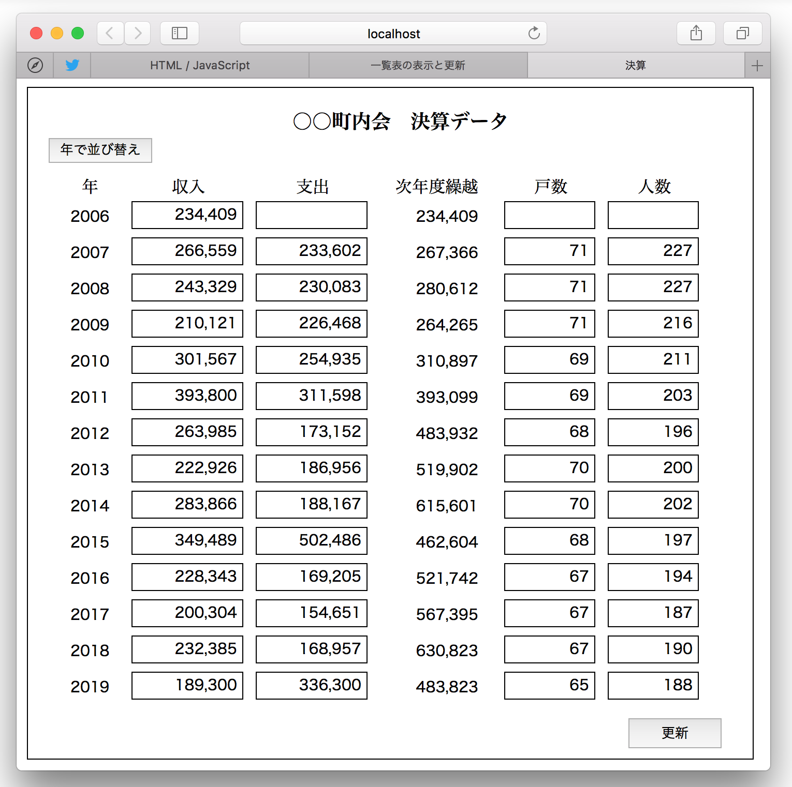

一覧表の表示と更新
サーバのデータベースから取得したデータを二次元の表に表示する。画面上でデータを編集し、データベースに更新する。
サンプルのアプリケーションは、とある町内会の会計データを表示したもので、年度毎の収支と繰越し金額の推移を一覧表にしたものである。収入、支出および戸数、人数、コメントは画面から入力可能であり、収支を変更したときは、全体の金額を再計算する。入力の反映はひとまずは画面上だけで、データベースに更新するには、更新ボタンの実行により行う。

画像をクリックすると動画が表示されます
データの取得と更新
データベースからデータを取得し更新するには、血圧管理カレンダー、日記帳と同様に、HTTPリクエストをサーバに送り、サーバ側のPHPスクリプトでデータベースの操作を行うようにする。レスポンスデータはJSON文字列で受け取る。表は、HTML要素を動的に追加することによって作成する。
input要素のイベントを補足する
アプリケーションでは、入力を行う収入、支出、戸数、人数といったデータは input要素に設定する。数値はカンマ編集して表示する。
操作者が値を入力するために input要素にフォーカスを移したとき、数値にカンマが残っていると編集が煩わしいので、イベントハンドラの働きにより数値のカンマを削除している。
入力が済み、タブキーによる移動や他の要素をクリックしてフォーカスを抜けたとき、入力値のニューメリックチェックを行い、エラーがあれば入力値を消し、フォーカスを元の場所に戻す。エラーがなければ数値をカンマ編集し、入力が収支の場合は全期間の金額の再計算を行い表を再表示する。
フォーカスが当たったときは focusイベントが、外れたときは blurイベントが発生する。イベントリスナーによりイベントを監視し、イベントが発生したときに実行する関数を定義する。
イベント発生時に行う、数値をカンマ編集する処理。正規表現を利用する。
数値のニューメリック（整数）チェック
オブジェクト（連想配列）の配列をソートする
オブジェクトを要素に持った配列をソートするには、配列のソートメソッド（Array.sort)を実装し、中でオブジェクト同士の大小関係を判定するだけで良い。次のコードはレコードの配列を年をキーにソートしているものである。
ソースコード
HTML
diary.html
JavaScript
diary1.js
CSS
diary.css
サーバーサイドの処理